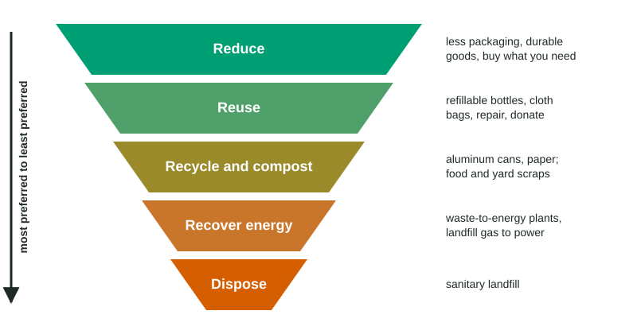

Waste Reduction Methods
Waste is reduced by following the hierarchy: reduce first (less packaging, durable goods), then reuse, then recycle and compost, then recover energy, with landfilling last.
Part 1 · Hook
Why this matters
Part 2 · Before you start
What this builds on
Part 3 · Prerequisite check
Quick check before you start
1. What gas forms when food decomposes in a landfill?
- Methane
- Ozone
- Radon
- Sulfur dioxide
Show the answer
Without oxygen, decomposition makes methane.
- Correct: Methane:
- Ozone:
- Radon:
- Sulfur dioxide:
2. About what share of United States municipal solid waste was landfilled in 2018?
- About half
- About 10%
- About 90%
- None
Show the answer
The EPA reported 146.1 of 292.4 million tons, about 50%.
- Correct: About half:
- About 10%:
- About 90%:
- None:
Part 4 · See it
See it first

Part 5 · Step by step
How it works, step by step
- Products are designed with less material and people buy less (source reduction)less waste is created at all
- Items are reused or repairedfewer new products must be made, saving materials and energy
- Materials are recycled and food and yard waste is compostedless goes to landfills, less ore is mined, and less landfill methane forms
- What remains can be burned for energy, and landfills capture their methanesome energy is recovered from waste that could not be avoided
Part 6 · Key ideas
Key ideas
- The waste hierarchy: reduce, reuse, recycle and compost, recover energy, then landfill. The earlier steps save the most.
- Source reduction means making less waste in the first place: less packaging, durable products, buying only what is needed.
- Recycling saves resources and energy (aluminum about 95%) but costs money to collect and sort; some plastics have weak markets. Composting turns food and yard waste into humus and avoids landfill methane.
- Other tools: landfill gas capture for electricity, e-waste recycling, and policies such as deposits, bag fees and pay-as-you-throw.
Part 7 · Misconception
A common mistake
The wrong idea: Recycling is the best thing you can do about waste.
What actually happens: Reducing and reusing come first, because they avoid making the waste at all. Recycling is better than landfilling, but it still uses energy to collect, sort and process materials.
Part 8 · Check yourself
Check yourself
Exam-style questions. Anything you miss goes into your review queue.
1. Order the waste hierarchy from most preferred to least preferred.
- Reduce (make and use less)
- Reuse (use things again)
- Recycle and compost
- Recover energy (waste-to-energy)
- Dispose (landfill)
Show the answer
Reducing avoids waste altogether; reusing keeps items in use; recycling and composting make new materials; energy recovery and landfilling are last.
- Correct order: 1. Reduce (make and use less) 2. Reuse (use things again) 3. Recycle and compost 4. Recover energy (waste-to-energy) 5. Dispose (landfill)
2. Which action is an example of source reduction?
- Using less packaging on products
- Recycling aluminum cans into new cans
- Burning trash to make electricity
- Collecting methane from a landfill
Show the answer
Source reduction means making less waste in the first place, such as designing products with less packaging or buying in bulk.
- Correct: Using less packaging on products: Right: less material is used, so less becomes waste.
- Recycling aluminum cans into new cans: Recycling handles waste after it is made.
- Burning trash to make electricity: That is energy recovery from waste.
- Collecting methane from a landfill: That handles gas from waste already buried.
Data
A city's trash before and after a pay-as-you-throw program
| Stream | Before (kg/week) | After (kg/week) |
|---|---|---|
| Trash to the landfill | 18.0 | 11.7 |
| Recycling | 4.0 | 6.5 |
| Compost (food and yard) | 1.0 | 3.8 |
| Total | 23.0 | 22.0 |
3. Find the percent change in household trash sent to the landfill after the program began.
Type a number, then its unit (%). Scale words (2.5 million) and powers of ten (2.5 × 10^6) are read.
Show the answer
- Answer: -35 %
4. Total household waste barely changed (23.0 to 22.0 kg). What does the program mainly do, based on the data?
- It makes households produce far less waste overall
- It shifts trash into recycling and compost
- It moves waste from recycling into the trash
- It has no effect on where waste goes
Show the answer
Households moved material from the trash into recycling and compost, which are cheaper or free, so landfill trash fell much more than total waste.
- It makes households produce far less waste overall: Total waste fell by only 1 kg a week.
- Correct: It shifts trash into recycling and compost: Right: recycling and compost rose as trash fell.
- It moves waste from recycling into the trash: Recycling rose; it did not move into the trash.
- It has no effect on where waste goes: Landfill trash fell 35%.
5. After the program, what percent of each household's total waste is diverted from the landfill by recycling and compost?
Type a number, then its unit (%). Scale words (2.5 million) and powers of ten (2.5 × 10^6) are read.
Show the answer
Diverted: kg of 22.0 kg. .
- Answer: 46.82 %
6. Is pay-as-you-throw a policy or a technology?
- A policy: a city rule that charges by the bag
- A technology: a machine that sorts recycling
- A technology: special trash bags that break down
- Neither: it is a natural change in habits
Show the answer
Charging households by the bag of trash is a rule set by the city, so it is a policy. It works through a price incentive, not a device.
- Correct: A policy: a city rule that charges by the bag: Right: it changes behavior with a price.
- A technology: a machine that sorts recycling: The program is a fee rule, not a machine.
- A technology: special trash bags that break down: The bags are not the point; the fee is.
- Neither: it is a natural change in habits: The change followed the new fee rule.
7. Assume that recycling one aluminum can saves about 0.2 kWh of energy compared with making a new can from ore. A school recycles 12,000 cans a year. Write the setup for the kWh saved, then the answer.
Type the setup as on the exam, with brackets and units, then the answer.
Show the answer
- Setup: ; answer 2400 kWh
Part 9 · Summary
Summary
Part 10 · Up next
What comes next
Part 11 · Connections